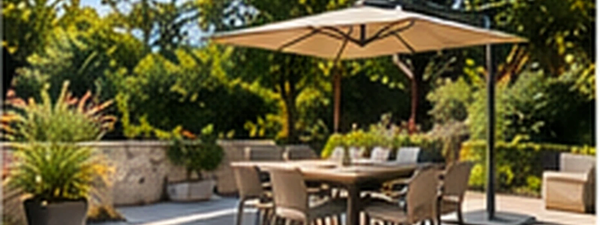

Zones d’intervention
Proche de vos projets,
au cœur de notre région
Basée à Avoine, AWZ-Rénovation intervient en Indre-et-Loire, Maine-et-Loire et Vienne pour vos travaux de maçonnerie, rénovation, façades, pierre et tuffeau.
Intervention rapide
Devis gratuit
Assurance décennale
AvoineVilles desservies Carte interactive
Zoom sur le territoire
Un territoire riche de patrimoine
Chaque secteur a son caractère : pierre de tuffeau, maisons anciennes, façades traditionnelles, extensions et aménagements contemporains. Découvrez nos pages locales.
Votre projet
Un chantier dans notre secteur ?
Parlez-nous de vos travaux : nous vous répondrons rapidement pour organiser la suite.